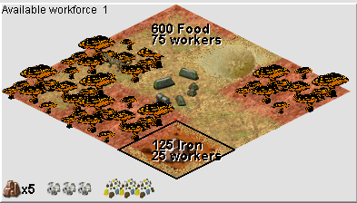
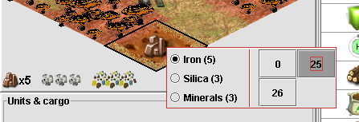

Resource production from environment
A Martian colony gathers most of its resource from the environment by
sending out colonists to harvest food or, mine iron, silica or minerals.
Colonists can be assigned to tiles that are neighboring the colony tile
with a maximum number of 200 colonists per tile. This value will be
increased if a "Mars transit system" improvement is built in the colony
or the player has selected the Polish, who have a bonus in maximum
number of assignable colonists.
When colonists are assigned to a tile to produce resources, that number
of colonists is dropped from the available "production workforce". No
colonists can be assigned if there are are not any colonists in the
"production workforce" or that tile is already used by colonists of a
nearby colony.

When mouse is hovered on tiles that can be harvested for resources, the
interface displays the quantity of resources that can be produced on
that tile. If the quantity of producable resources is greater than 5,
amount will be displayed with a "x" like "[Iron]x5".
Clicking on a tile will bring a popup to set the resource to be gathered
and the number of colonists to assign to gather it. The value of "0"
can be selected in the popup to remove workforce from a tile.
